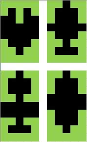

Na řešení úloh máte 4 hodiny čistého času.
Před zahájením soutěže vám pořadatel oznámí, kam máte ukládat
řešení úloh. Zároveň připravte pro hodnotícího návod, jak uvést vaše
zařízení do provozu a napište, které úlohy jste řešili, a jak mezi
nimi přepínat. Hodnotící nebude do zařízení nic nahrávat. Jen ho zapne
a vyhodnotí úlohy, na kterých jste pracovali. Pokud bude hodnotící požadovat
vaši součinnost, jistě ochotně vyhovíte.
Pro řešení můžete použít vývojovou platformu s mikrokontrolérem dle
své preference (např. Arduino, Raspberry, ESP8266, FRDM, STM32,
micro:bit, PicAxe, BASIC Stamp, AVR, PIC …). Pro řešení úlohy budete
dále potřebovat:
- PC s vývojovým prostředím pro tuto platformu.
- Použít můžete i online vývojové prostředí pro tuto platformu.
- 3× LED žlutá, 3× LED červená, 3× LED zelená, 3× LED modrá.
- 4× tlačitko, 2× posuvný spínač.
- Alfanumerický LCD, alespoň 2x16 znaků, paralelní nebo I2C.
- Nezbytné součástky k připojení a propojení (rezistory, nepájivé kontaktní pole, propojovací
dráty).
- Další hardware není omezen (voltmetr apod.), ale pro řešení úlohy není nutný.
Můžete řešit jakékoliv z následujících úloh, ovšem úloha Příprava
je povinná
a s tou tedy musíte začít. Ostatní můžete řešit v libovolném
pořadí. Pokud budete řešit více než jednu úlohu, musíte zároveň
implementovat funkci jejich přepínání.
Součástí vaší práce, a tedy i hodnocení, je vytvoření schématu zapojení vašeho mikrořadiče
s periferiemi (LCD displej, 4× LED, 4× tlačítko, dvoupólový spínač).
Schéma stačí volnou rukou na papír. Realizujte fyzické zapojení tak, že bude zapojeno
po jedné LED od každé barvy.
Pro řešení každé úlohy vytvořte vývojový diagram, který zadání řeší na úrovni větvení
programu. I vývojový diagram bude součástí hodnocení, ale i ten stačí volnou rukou
na papír.
U každé úlohy bude jedním bodem hodnocena přehlednost zdrojového kódu (vhodné členění
zdrojového kódu, vhodně zvolené názvy identifikátorů, komentáře na místech kde je
to potřeba,
atd.).
Příprava
Maximální počet bodů 15
Tato úloha je povinná.
Vytvote program s následující funkcí.
- Inicializace LCD displeje.
- V paměti CGRAM displeje jsou vytvořeny čtyři vlastní znaky dle vzoru.

- Displej zobrazuje na prvním řádku text Start.
- Displej zobrazuje na druhém řádku čtyři vlastní znaky dle vzoru.
- Na displeji bliká kurzor.
- S použitím dvoupólového spínače je možné přejít do jakékoliv jiné úlohy.
Horizontální animace textu
Maximální počet bodů je 17,5
Vytvořte program, který bude na LCD displeji zobrazovat posouvajcí se text podle následujících
pravidel:
- Na prvním řádku se posouvá text: Soutez v programovani.
- Na druhém řádku se posouvá text: okresni kolo.
- Během animace textu je viditelný vždy text pouze na jediném řádku.
- Rychlost posuvu textu zvolte tak, aby bylo možné pohodlné čtení.
- Při zobrazení textu na prvním řádku nechť svítí zelená ledka.
- Při zobrazení textu na druhém řádku nechť svítí žlutá ledka.
- S použitm dvoupólového spínače je možné přejít do jakékoliv jiné úlohy.
Počítání stisků tlačítka
Maximální počet bodů je 21,5
Vytvořte program, který bude realizovat následující funkci:
- Program počítá počet stisků některého ze čtyř tlačítek v úplynulých 5 sekundách.
- Nejstarší stisk po uplynutí 5 sekund expiruje a není tedy dále započítán.
- Zákmity tlačítek jsou ošetřeny s použitím přerušení.
- Počet započítaných stisků je zobrazen na LCD displeji a pomocí ledek.
- Na LCD displeji je zobrazení pomocí textu Počet platných stisků xx, kde xx je číselná
hodnota počtu stisků.
- Pokud není žádný platný stisk nechť svítí žlutá ledka.
- Pokud je platný jeden stisk, nechť svítí zelená ledka.
- Pokud jsou platné dva stisky, nechť svítí modrá ledka.
- Pokud jsou platné tři a více stisků, nechť svítí červená ledka.
- S použitím dvoupólového spínače je možné přejít do jakékoliv jiné úlohy.
Videostop
Maximální počet bodů je 15,5
Vytvořte program, který bude umožňovat hraní hry Videostop.
- Hra začíná stiskem libovolného tlačítka.
- Na prvním řádku displeje se budou zobrazovat 4 náhodně generované znaky z úlohy Příprava.
- Uživatelem definované znaky mohou být nahrazeny písmeny A-D.
- Znaky budou oddělené mezerou.
- Uživatel bude mít čas 0,5s na stisknutí tlačítka s počtem stejných znaků.
- Na druhém řádku bude zobrazen počet bodů a čas do konce v sekundách.
- Počet započítaných bodů bude odpovídat počtu stejných znaků.
- Pokud bude stisknuto více tlačítek současně, tak se nezapočítá žádné.
- Správná odpověď bude signalizována rozsvícením zelené led na 0,1s.
- Nesprávná odpověď bude signalizována rozsvícením červené led na 0,1s.
- Vypršení časového intervalu na odpověď bude signalizováno rozsvícením žluté led na
0,1s.
- Celkový čas hry bude 1 minuta.
- S použitím dvoupólového spínače je možné přejít do jakékoliv jiné úlohy.